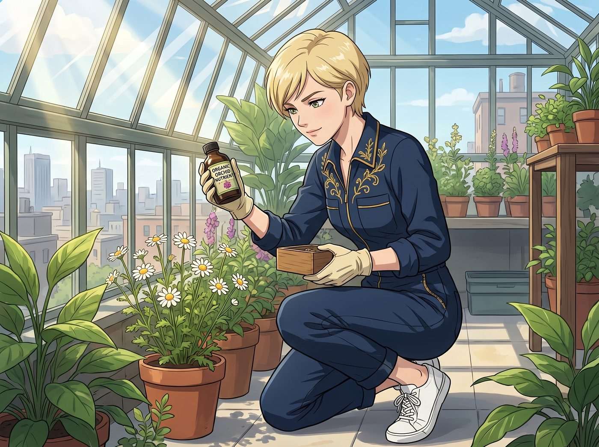

天台園藝大翻車

一、上流社會的插花修養
為了履行向 Kate 示好的心意,Victoria 特地穿上一身昂貴的設計師工裝連身褲,戴著一副小羊皮手套,踩著她那雙嶄新的白色球鞋,來到天台溫室,試圖展現一番「上流社會的插花修養」。
「這株洋甘菊,」她蹲下身,語氣裡帶著志在必得的自信,從隨身攜帶的精緻小盒裡取出一瓶空運進口的有機蘭花營養液,「需要更專業的養分補充。」
二、天價肥料的暴擊
她按照自己的判斷,調配出一份濃度頗高的營養液,澆進 Kate 那盆普普通通的秋海棠花盆裡。
不到十分鐘,原本翠綠的葉片,以肉眼可見的速度迅速焦黃、下垂,像是被無形的高溫燙傷了一般。
「這……」Victoria 瞪大眼睛,難以置信地看著眼前的慘狀,「這不應該啊,這可是頂級蘭花專用營養液!」
三、蚯蚓驚魂
意識到自己好心辦壞事,她連忙想換土搶救,伸手往盆栽深處挖去。
就在這時,一隻肥碩的蚯蚓,毫無預警地從翻動的泥土裡猛地鑽了出來,在她的小羊皮手套上蠕動了兩下。
「啊——!」Victoria 發出一聲破音的尖叫,手裡那個昂貴的名牌陶土花盆瞬間脫手,「啪嚓」一聲摔得粉碎,飛濺的泥土和碎片,把她那雙嶄新的白球鞋濺得滿是泥巴。
四、兔子的二度襲擊
被這場蚯蚓驚魂嚇得魂飛魄散的 Victoria,連忙起身想遠離那攤狼藉,腳步踉蹌間,一頭撞進了溫室角落那個養著幾隻兔子的柵欄旁邊。
她定了定神,看著那幾隻毛茸茸、看起來人畜無害的小兔子,想著或許能挽回一點形象,便小心翼翼地伸出手,想溫柔地摸摸其中一隻兔子的頭頂。
沒想到那隻兔子毫無預兆地猛地一躍,直接從柵欄縫隙裡竄了出來,帶著一股受驚的衝勁,朝著她的方向直直衝了過去。
「哇啊!」Victoria 嚇得轉身就跑,那隻兔子卻像是把她當成了某種可疑的巨大威脅,鍥而不捨地緊追不放,兩隻長耳朵一顛一顛地緊貼在她腳邊。
「牠、牠在追我!」Victoria 提著裙擺,踩著那雙即將徹底報廢的白球鞋,繞著整個天台溫室連滾帶爬地狂奔,聲音裡帶著毫不矜持的驚慌,「Kate!救命!快把牠抓走!」
正在給另一隻兔子餵草的 Kate,眼睜睜看著這位平日高高在上的名媛,被一隻巴掌大的兔子攆得滿場飛奔,整個人瞬間破功,笑得直接蹲坐到地上,肩膀劇烈顫抖,連呼吸都跟著岔了氣,一時竟站不起身,只能斷斷續續地擠出幾個字。
「牠、牠不會咬人的……」她笑得眼淚都快流出來,伸手指著那隻兔子,「牠只是,想聞聞妳身上那瓶蘭花營養液的味道而已……」
Victoria 繞著溫室跑了整整兩圈,那隻兔子才終於失去興趣,轉頭跑回柵欄邊繼續啃草,彷彿剛才那場追逐從未發生過。
Victoria 扶著旁邊的花架大口喘氣,一屁股跌坐進旁邊那攤混著泥土和肥料的濕泥地裡,那身昂貴的設計師連身褲,瞬間沾染上大片深色的泥漬。
五、溫柔拆台
好不容易止住笑,Kate 抹了抹笑出來的眼淚,深吸一口氣,快步走過去,輕輕遞給狼狽不堪的 Victoria 一把小木鏟。
「Victoria,」她盡量維持著嚴肅,語氣裡卻藏不住笑意,「泥土裡的蚯蚓代表土壤很健康,不用害怕。而且——」她瞥了眼那盆焦黃下垂的秋海棠,「洋甘菊不需要魚子醬級別的肥料,它們只需要俄勒岡自然的雨水和陽光就夠了。」
Victoria 滿臉通紅,狼狽地跌坐在泥地裡,一邊接過小木鏟胡亂扒拉著泥土,一邊咬牙切齒地維持著最後一絲尊嚴。
「我只是,」她梗著脖子,「在對它們進行逆境抗壓測試!」
Kate 沒有拆穿這個蹩腳的藉口,只是笑著蹲下身,幫她把散落的花盆碎片一片一片撿起來,語氣溫柔又帶著一絲揶揄。
「妳這身『測試裝備』,」她瞥了眼那雙全毀的白球鞋和沾滿泥漬的連身褲,「代價還真不小。」
Victoria 看著自己這身徹底報廢的行頭,又看了看那隻此刻正若無其事地在溫室角落啃著青草、絲毫不覺得自己闖了禍的兔子,一時說不出話,只能無奈地嘆了口氣,認命地繼續蹲在泥地裡,笨拙地學著把土重新填回花盆。